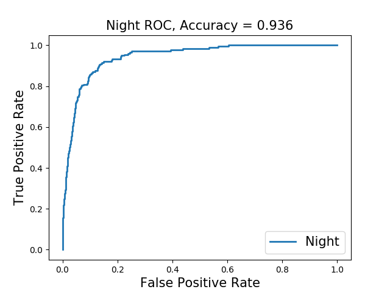

Problem Definition
The project is to classify images into pre-defined categories using a trained deep learning model. As artificial intelligence and machine learning develop, we expect the machine to do more. Image understanding and classification are certainly the next level of the game. Because the goal of this classifier is to find out the violence index based on whether there is protest, fire, police, group of 20, group of 100, night, shouting, etc in the image, this has real-world meaning as the government or the police department could use an AI system to monitor what's going on on the street. This would help reducing violence and prevent something worse from happening. The assumption I should make is that this problem is certainly solvable. The anticipated difficulty was to find the best model and the implementation.
Method and Implementation
To achieve the goal, I need a model that could classify images well. Upeon research on the leading model, ImageNet, AlexNet, VGG, GoogLeNet, and ResNet were brought to attention. Because the dataset was so large and the model needs to be deep, there would be problems of overfitting and gradient descent. ResNet, the residual neural network, handles these problems well by skipping a few layers in the process but with a better performance. After comparisons, ResNet seems to be a good fit for this problem as it's the most advanced model and the one with the least error. Also, a lot of current popular deep learning models were built on this.
(source: CNN Architectures: LeNet, AlexNet, VGG, GoogLeNet, ResNet and more...)
Instead of TensorFlow, PyTorch is the current leading machine learning platform and recent article points out that it out performances TensorFlow, so I have decided to train my ResNet with PyTroch.
Method Steps:
1. Build the ResNet 50-layer model with PyTorch pre-trained built-in model, and customize the last layer by changing the number of output nodes to meet the need of the project.
2. Train the network with 2/3 of the training set, and use the rest 1/3 as validation set due to the limitation of the computing resources. Set the epoch to be 100, and choose the model that gets the highest score on the validation set as the best model
3. Evaluate the best model with the complete test set and generate ROC curves for each category to visualize the results.
Improvements:
1: Initially implemented ResNet with 34 layers and 50 layers respectively, trained and tested both models on a small portion of the train set and the test set. 50-layer performed better than the 34-layer one.
2: To better train the model and utilize the dataset, I also implement image augmentation to increase the training samples.
Code Outline
1. class fcLayer(nn.Module): customized output layer of the reset50 as the projects outputs multiple results.2. calculate_loss(...): To calculate the loss of the model
3. train(...), test(...): train and validate the customized resnet50 model.
Experiments
The model was trained on the train set of 32,000 images and tested on the test set containing 8000 images. Because of the size of the data, the result are shown on multiple ROC curves with accuracies. Since Violence index is not a binary variable, it was shown on a scatter plot. Complete Dataset
Results
 |
||
|  |
Discussion
This method is successful as most of the accuracies are acceptable. Although The model didn't perform well on estimating the number of people in the image and detecting signs. The method fed all the original images to the model and have it trained on those, so there is no customized method on detecting people or signs. Potentially the method could be improved by adding skin color detection to better detect people. Or could use a sliding window method to train it to detect signs. Trained on the original image could miss some features and details as it's just a general approach.
Conclusions
Deep Learning is powerful and magical!
Credits and Bibliography